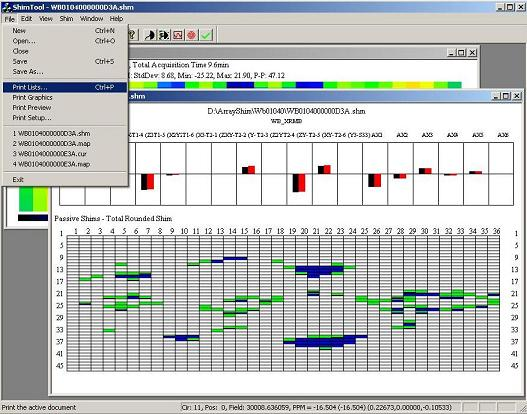
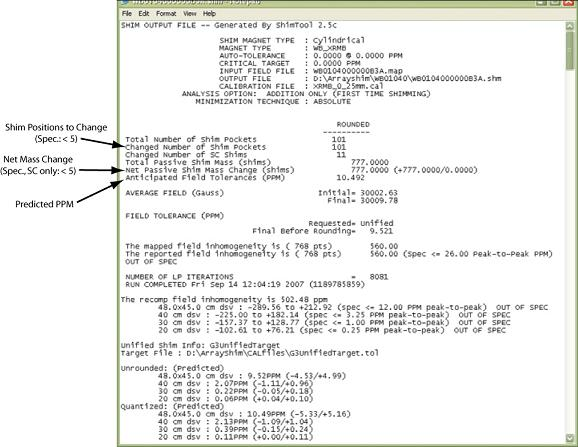
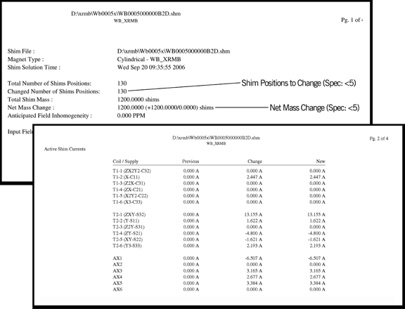
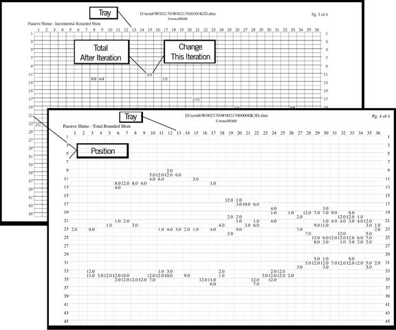
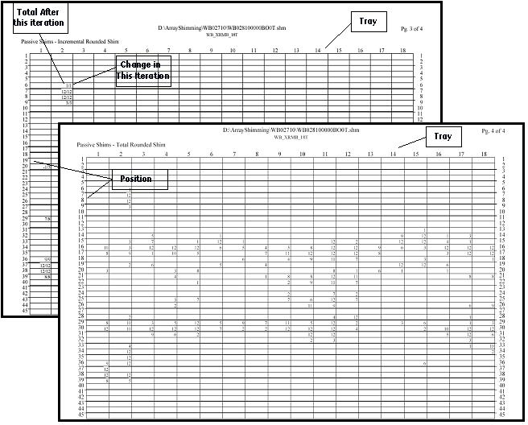
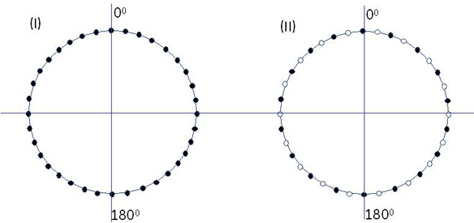

Illustration 34: Example ShimTool Printed Report, W Series LCC300: Pages 1 and 2

Illustration 32: Shim Iteration Results Displays

The .cur/.shm text file is automatically saved by the ShimTool. Print the file from NotePad, WordPad, or a word processor for pages similar to Illustration 33. The ShimTool can also open previously saved files for on-screen viewing by selecting Show the output SHM file from the Shim menu.
Illustration 33: Sample ShimTool Text File Displays

The multi-page paper version is generally easier to use while placing shims in the shim trays. To obtain a multi-page paper version of the ShimTool results that look similar to Illustration 34:
Click Print Lists... from the File menu,
Set the page orientation to Landscape, and
Click [OK].
| NOTE: | The Passive Shims - Incremental Rounded Shim information on Page 3 and the Passive Shims - Total Rounded information on Page 4 of the ShimTool printout (Illustration 34 and Illustration 35) is the same information contained under Incremental - Quantized and Total - Quantized in the .shm file (Illustration 36). This page now shows the amount of change and the resulting total at each shim position to be changed. (.cur files do not contain incremental information for passive shims.) |
The following illustrations show the C:\ drive (Windows 2000) or D:\ drive (Windows XP) directory paths used by ShimTool installations.
Illustration 34: Example ShimTool Printed Report, W Series LCC300: Pages 1 and 2
Illustration 35: Example ShimTool Printed Report, WB Series LCC300: Pages 1 and 2

Illustration 36: Example ShimTool Printed Report, 36-Tray Passive Shimming: Pages 3 and 4

| NOTE: | Use these Shim Tool results for Passive Shimming. |
Illustration 37: Example ShimTool Printed Report, 18-Tray Passive Shimming: Pages 3 and 4

Illustration 38: Shim Tray Locations for 36-Tray and 18-Tray
